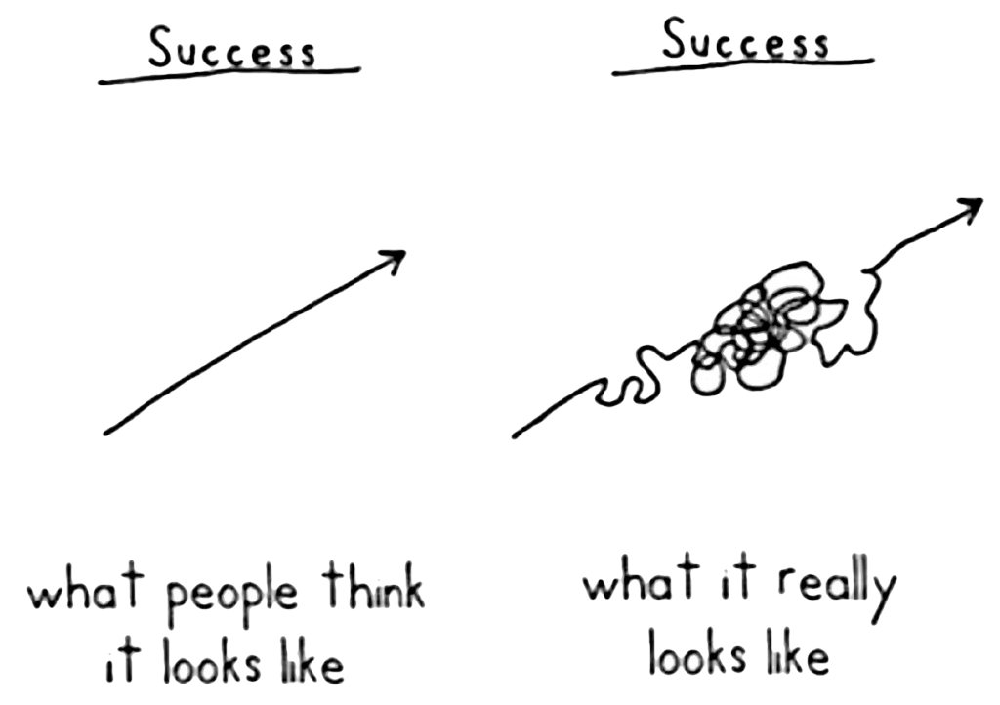

Carry around your data
See a project example in action at satchel_examples
Philosophy
The driving factor behind satchel is helping to solve two issues that become more and more painful as projects get larger:
a project should be split into multiple files to keep knit times manageable and a semblance of organization. This fits nicely with bookdown as a mechanism for organizing Rmd’s.
Reproducible research should strive to keep code embedded in reports
How does satchel mitigate these pain points?
First, it allows an easy mechanism for transferring data or objects between Rmd files so that there is only a single source of ‘truth’ for any piece of code (minimize copy and pasting code between files). For example, given raw data that needs consistent modifications before use in multiple files, the modifications should occur once, and the intermediate object be shared to the other files. This allows a single source of the change, so any future modifications will be properly propogated to all other instances.
Second, an ‘elephant in the room’ of literate programming, is the the progression of a project does not proceed in a straight line, instead more like: 
The total progression should be tracked in the lab-notebook to document false leads etc. When trying to create a final report though, only specific components will be retained. Satchel allows the necessary data/objects/etc to be easily saved from the lab-notebook Rmd files into a location that is suitable to be pulled into a separate final-report. This further allows the lab-notebook format to be separated from the final reports (eg Rmd files in lab-notebook, and Rnw files for final report for more control over layout, references, etc.)
Using Satchel
Initialization
Satchel’s must be initialized by calling Satchel$new(...)
For example:
The resulting object can have any name, though the convention is to use satchel if only creating one, and satchel_<additional_identifier> if using multiple in a single file, or if multiple Rmd’s are commonly used within the same session.
Multiple satchel nodes can be created in a single file
library(satchel)
satchel_data <- Satchel$new("<namespace>", "<path/to/satchel/tree>")
satchel_plots <- Satchel$new("<other-namespace>", "<path/to/satchel/tree>")
# completely different tree
report_satchel <- Satchel$new("<namespace>", "<finalreport_path/to/satchel/tree>") This can be useful to save certain objects to pass around between documents in the lab-notebook, but separately save out key objects for report(s), presentation(s), etc
Saving objects
satchel$save(Theoph) # will be saved as Theoph
satchel$save(Theoph, "pk_theoph") # will be saved as pk_theophThe data_name is key for use in pipelines, which do not retain the object names being passed
# these will break as the name cannot be deparsed
satchel$save(Theoph %>% mutate(REP = 1)) # would try to save with the literal name `Theoph %>% mutate(REP = 1)
Theoph %>% mutate(REP = 1) %>% satchel$save() # would save with the name `.`
# Instead, specify a name
Theoph %>% mutate(REP = 1) %>% satchel$save("Theoph")At the end of an Rmarkdown file, you can get the information for all saved object during the session
Using objects from other places
Objects saved from other files can be accessed with satchel$use(<object_name>, <namespace>)
Given an data frame called safety_data saved in the safety namespace specified in another file, saved by:
satchel <- Satchel$new("safety", "satchel")
...
satchel$save(safety_data)In the new file, the safety_data could be acquired via:
Satchel is smart enough to scan all the namespaces for an object called safety_data and pull it in. However, if there are multiple safety_data objects saved, an error will occur, and the namespace must be explicitly set.
For example, in a third file, given:
satchel <- Satchel$new("other_safety", "satchel")
...
satchel$save(safety_data)As safety_data is present in both safety and other_safety namespaces, to use it you must specify which namespace you want to refer to:
To see what is available across the entire tree, use satchel$available()
Previewing objects
For ongoing analyses, sometimes it is convenient to get a look at the data you are interested in, without loading the entire object, especially when dealing with larger datasets.
Satchel automatically keeps a head() of certain objects (dataframes, matrices, vectors) so that they can be previewed, rather than pulling in the entire object.
As this does not need to pull in the entire file, access will be fast and light on memory.
Advanced
access behavior
when ‘using’ an object, the default behavior is to re-scan the satchel tree to make sure the object is available and current. This is especially important if using multiple satchel’s concurrently, when new objects are generated after another is initialized, it may not be aware of those updates. This continual scanning may not be ideal if the desire is to load a number of objects on after another (for example, pulling in a bunch to a list). To manually control the behavior, you can turn off refreshing via satchel$auto_refresh(FALSE)
The overall, optimized flow might be something like:
satchel$auto_refresh(FALSE)
satchel$available() # manually query the tree to update it
satchel$use(...)
satchel$use(...)
satchel$use(...)
satchel$use(...)
satchel$auto_refresh(TRUE) # turn auto-refresh back onKeep in mind, this is almost guaranteed to be a unneeded optimization, as scanning the file tree takes microseconds in most cases. However for certain very large projects, or projects with thousands of very small objects saved out, it could play a role.
HINT: if you find yourself saving many small, related objects, it may be better to collapse the objects into a list then just save the single list object.